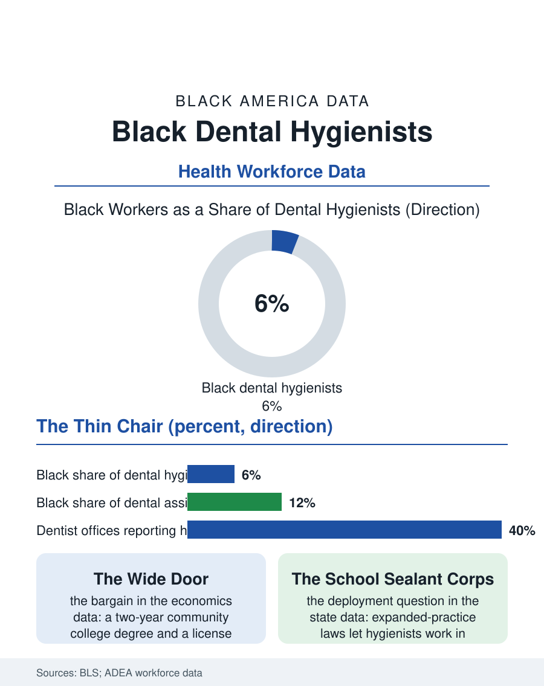

Black Employment
The Preventive Chair: Black Dental Hygienists
A two-year licensed profession in chronic shortage holds one of allied health's thinnest Black shares, throttled by awareness and advising rather than barriers. The hygienist file.

The dental hygienist occupies one of the best bargains in American health care work: a two-year degree, a license, wages well above the median, and a chair in nearly every dental office in the country. Black workers hold roughly five or six of every hundred of those chairs in the federal counts, one of the thinner shares in the allied health file, in a profession whose preventive work, cleanings, screenings, and early detection, matters most in the communities with the least dental access. This article reads the hygienist file.
The Two-Year Door That Stays Narrow
The pipeline's puzzle is that its door is objectively wide. Dental hygiene programs run through community colleges at community college prices, admit through published criteria, and graduate into a licensed shortage, dentists in most markets report hygienist vacancies as their binding constraint, with wages bid up accordingly. Yet the applicant and enrollment data show Black students entering at low rates, and the profession's own analyses locate the filters upstream and sideways: awareness, since hygiene is a profession teenagers rarely see described as a career; the prerequisite science sequence at the community college, where advising determines who learns that hygiene's competitive admissions reward a specific transcript; and the clinical placement geography, programs concentrated in particular suburbs and college towns while the dental need concentrates elsewhere. The workforce that results is also among the profession's most female, and its Black membership shares the gender profile, which connects the file to the Black women's workforce story: a licensed, family-scheduled, shortage-protected occupation that should, by its economics, be a major Black women's profession, and whose thin numbers therefore measure information and advising failures more than any structural barrier the license imposes.
The Chair as Screening Site
The hygienist's clinical role has expanded as the dental file's science has: the cleaning appointment is, for millions of Americans, the most regular health contact they have, and hygienists now screen for oral cancer, hypertension, and diabetes signs, administer fluoride and sealants, and in a growing number of states practice with expanded authority, in schools, nursing homes, and public health settings without a dentist on site. Those expanded-practice states write the file's equity chapter, because they convert the hygienist into a mobile preventive workforce for exactly the settings, the school sealant programs and elder facilities of this atlas, where Black patients' dental disease concentrates untreated. The states' scope battles between dental associations and hygienist associations are, in the data, arguments about whether that workforce gets deployed. Inside the private office, the hygienist's production economics, the hygiene column is the recall engine that fills the dentist's restorative schedule, make the hygienist quietly central to the practice's revenue, a centrality the wage data have begun to honor as the shortage bites, with signing bonuses and flexible scheduling now standard recruiting instruments in tight markets, instruments whose benefits distribute to whoever holds the license, one of the file's genuinely leveling mechanisms.
The Independent Horizon
The profession's frontier is independence: a minority of states authorize forms of direct-access or independent hygiene practice, letting the hygienist own the preventive business itself, and the early ownership data show small practices forming around school contracts, elder care facilities, and mobile clinics. For Black hygienists the independence question connects this employment file to the business file, as it has throughout the trades and health sections: the license as an ownership asset, the practice as a preventive-health institution in the neighborhoods where the dental disease burden and the dentist shortage overlap. The training capacity remains the binding constraint on every version of the future: hygiene programs are clinical and therefore small, waiting lists at the affordable community college programs are the norm, and expanding seats requires clinical space and faculty that budgets fund slowly. The hygienist file closes with the occupation's standing irony. Dentistry's access crisis has a licensed, two-year, shortage-proof profession standing in the middle of it, ready to be deployed to schools and nursing homes at preventive prices, under-enrolled by the population whose communities need it most, in a pipeline failure made entirely of information, advising, and program geography. Those are the cheapest failures in this entire atlas to fix, and the profession's own workforce reports, to their credit, now say so in print.
More in Black Employment
The Black Unemployment Rate: The Two-to-One Pattern
Black unemployment runs at roughly twice the White rate — 5.5 percent against 3.3 percent in annual averages — a ratio stable across five decades of federal data. How it is measured and why it persists.
Black Median Weekly Earnings: The 80-Cent Ratio
Black full-time workers earn a median of about $900 a week — roughly 80 cents for every dollar White workers earn. The BLS earnings data by group, gender, and occupation.
Black Labor Force Participation: Working at National Rates
Black labor force participation runs at roughly the national rate — and Black women participate at higher rates than White women. The BLS participation data.
Source: U.S. Bureau of Labor Statistics, Current Population Survey; American Dental Education Association workforce surveys; state scope-of-practice data.